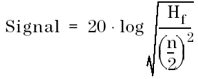
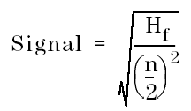

Signal
If db has been selected as unit:

If mV,V,uA or mA has been selected as unit:

Hf is the fundamental of the output signal.
n is the number of harmonics.
If db has been selected as unit:

If mV,V,uA or mA has been selected as unit:

Hf is the fundamental of the output signal.
n is the number of harmonics.